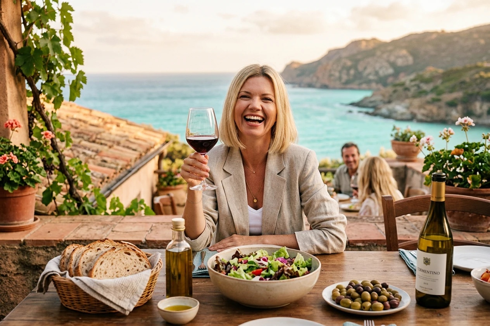

Danke
Danke, dass du dir Zeit genommen hast. Für diese Seiten, für die Rezepte und für den Gedanken dahinter: Essen darf nähren und trotzdem Genuss sein.
Du musst nichts perfekt machen. Wähle ein Gericht, das dich anspricht. Koche es, wiederhole es, mach es zu deinem.

Longevity beginnt nicht irgendwann.
Sie beginnt mit dem, was du jeden Tag wiederholst.